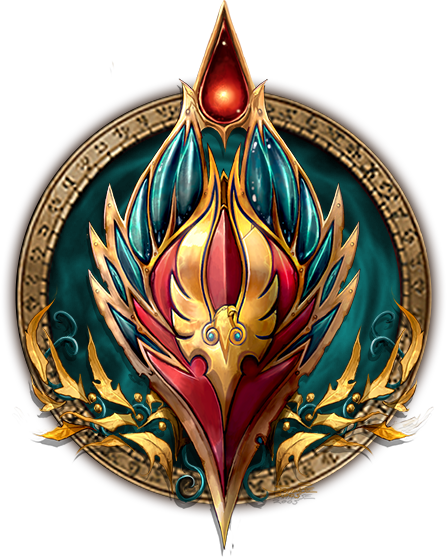

Consider this tips for PVE


In Wrath of the Lich King, Rogues can only be played by Humans, Dwarves, Night Elves, and Gnomes for the Alliance, or by Orcs, Undead, Trolls, and Blood Elves for the Horde. Unfortunately, unlike for casters, race matters a lot for a Rogue's DPS. Only 1-2 races per faction are considered viable.

| Race | Description |
|---|---|

|
Troll: Trolls may not look the part, but they
are the strongest race for Horde Assassination Rogues. Their
on-use racial BerserkingBerserking is the biggest and bursty out
of all of Horde racials — despite the Orc racial having a
shorter cooldown, BerserkingBerserking, will usually be
stronger.
|

|
Orc: Orcs have several powerful racial effects
that make them extremely strong overall — which is no
coincidence, as the strongest Rogue assassin in Warcraft lore,
Garona Halforcen, is an Orc. They are specially powerful in
fights where they can use their Blood FuryBlood Fury racial more
often than Trolls can use their BerserkingBerserking, thanks to
its lower cooldown.
|
|  |
Blood Elf: Female Blood Elf Rogues are cute as
hell, indisputably. However, cuteness doesn't help you DPS,
which is why Blood Elves are sadly a pretty weak race for
Rogues. Their only helpful racial is Arcane TorrentArcane
Torrent, which is pretty weak overall, but it makes them a tiny
bit stronger than Undead, the weakest race.
|

| Race | Description |
|---|---|

|
Human: Often considered the best choice for
Alliance Rogues, Humans provide several strong racial effects
that can improve your overall gameplay. Every Man for
HimselfEvery Man for Himself effectively acts as a trinket,
allowing you to clear all CC. This allows Humans to use double
DPS trinkets, boosting their damage by a considerable amount.
This is by far the strongest PvP racial in the entire game, as
it allows you to considerably boost your damage!
PerceptionPerception greatly increases the chance to detect
stealthed targets, giving us an advantage when fighting other
classes that are capable of using stealth. This racial effect is
great against other rogues or feral druids, as it allows you to
engage first!. Humans also possess DiplomacyDiplomacy, an effect
that increases your overall reputation gain by 10%. This effect
can be quite handy when trying to grab items that require
reputation grind.
|

|
Dwarf: Dwarves are least common race for Rogues in
WotLK, and for good reason — our racials aren't too useful.
Unlike Humans, our weapon specialization racial isn't as useful
if you're considering switching to Combat eventually, and our
utility racial, StoneformStoneform, has very, very limited uses.
This makes Dwarf Rogues by far the weakest Alliance Rogues,
unfortunately.
|

|
Night Elf: Being the most agile and sneaky of races, Night Elves have a higher base Agility stat than other races, which makes them better than other races which simply have no useful racial traits at all. Still, we're scraping the bottom here, if we're being honest — this benefit is so small that you could pick any of the other races and never notice a difference. But they are technically the strongest race, from a DPS-only perspective!.
|